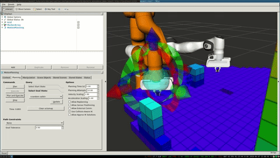
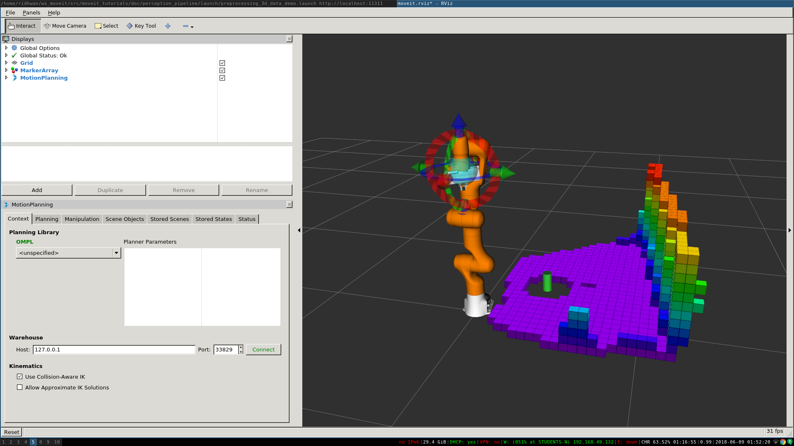

Perception Pipeline Tutorial
MoveIt allows for seamless integration of 3D sensors using Octomap. Once properly configured, you should see something like this in rviz:

Getting Started
If you haven’t already done so, make sure you’ve completed the steps in Getting Started.
Configuration
In this section, we will walk through configuring the 3D sensors on your robot with MoveIt. The primary component in MoveIt that deals with 3D perception is the Occupancy Map Updater. The updater uses a plugin architecture to process different types of input. The currently available plugins in MoveIt are:
The PointCloud Occupancy Map Updater: which can take as input point clouds (
sensor_msgs/PointCloud2)The Depth Image Occupancy Map Updater: which can take as input Depth Images (
sensor_msgs/Image)
To use the Occupancy Map Updater, it is only necessary to set the appropriate parameters on the ROS parameter server and to call startWorldGeometryMonitor from your PlanningSceneMonitor. This latter step is performed automatically when using Move Group functionality like in this tutorial’s example, so in that case it is only necessary to set the parameters for the octomap and octomap updater.
YAML Configuration file (Point Cloud)
We will have to generate a YAML configuration file for configuring the 3D sensors. Please see this example file for processing point clouds.
Save this file in the config folder in the robot’s moveit_config package with name “sensors_kinect_pointcloud.yaml”:
sensors:
- sensor_plugin: occupancy_map_monitor/PointCloudOctomapUpdater
point_cloud_topic: /camera/depth_registered/points
max_range: 5.0
point_subsample: 1
padding_offset: 0.1
padding_scale: 1.0
max_update_rate: 1.0
filtered_cloud_topic: filtered_cloud
The general parameters are:
sensor_plugin: The name of the plugin that we are using.
max_update_rate: The octomap representation will be updated at rate less than or equal to this value.
Parameters specific to the Point cloud updater are:
point_cloud_topic: This specifies the topic to listen on for a point cloud.
max_range: (in m) Points further than this will not be used.
point_subsample: Choose one of every point_subsample points.
padding_offset: The size of the padding (in cm).
padding_scale: The scale of the padding.
filtered_cloud_topic: The topic on which the filtered cloud will be published (mainly for debugging). The filtering cloud is the resultant cloud after self-filtering has been performed.
YAML Configuration file (Depth Map)
We will have to generate a YAML configuration file for configuring the 3D sensors. An example file for processing depth images can be found in the panda_moveit_config repository as well. Save this file in the config folder in the robot’s moveit_config package with name “sensors_kinect_depthmap.yaml”:
sensors:
- sensor_plugin: occupancy_map_monitor/DepthImageOctomapUpdater
image_topic: /camera/depth_registered/image_raw
queue_size: 5
near_clipping_plane_distance: 0.3
far_clipping_plane_distance: 5.0
shadow_threshold: 0.2
padding_scale: 4.0
padding_offset: 0.03
max_update_rate: 1.0
filtered_cloud_topic: filtered_cloud
The general parameters are:
sensor_plugin: The name of the plugin that we are using.
max_update_rate: The octomap representation will be updated at rate less than or equal to this value.
Parameters specific to the Depth Map updater are:
image_topic: This specifies the topic to listen on for a depth image.
queue_size: The number of images to queue up.
near_clipping_plane_distance: The minimum distance before lack of visibility.
far_clipping_plane_distance: The maximum distance before lack of visibility.
shadow_threshold: The minimum brightness of the shadow map below an entity for its dynamic shadow to be visible
padding_offset: The size of the padding (in cm).
padding_scale: The scale of the padding.
filtered_cloud_topic: The topic on which the filtered cloud will be published (mainly for debugging). The filtering cloud is the resultant cloud after self-filtering has been performed.
Update the launch file
Add the YAML file to the launch script
You will now need to update the sensor_manager.launch file in the “launch” directory of your panda_moveit_config directory with this sensor information (this file is auto-generated by the Setup Assistant but is empty). You will need to add the following line into that file to configure the set of sensor sources for MoveIt to use:
<rosparam command="load" file="$(find panda_moveit_config)/config/sensors_kinect_pointcloud.yaml" />
If you are using depthmap change the name of the yaml file to sensors_kinect_depthmap.yaml.
Note that you will need to input the path to the right file you have created above.
Octomap Configuration
You will also need to configure the Octomap by adding the following lines into the sensor_manager.launch:
<param name="octomap_frame" type="string" value="odom_combined" />
<param name="octomap_resolution" type="double" value="0.05" />
<param name="max_range" type="double" value="5.0" />
- MoveIt uses an octree-based framework to represent the world around it. The Octomap parameters above are configuration parameters for this representation:
octomap_frame: specifies the coordinate frame in which this representation will be stored. If you are working with a mobile robot, this frame should be a fixed frame in the world.
octomap_resolution: specifies the resolution at which this representation is maintained (in meters).
max_range: specifies the maximum range value to be applied for any sensor input to this node.
Obstacle Avoidance
If you set the initial and the final location of the robot in a way that there is no straight path between them, then the planner will automatically avoid the octomap and plan around it.
{kind=link}
Running the Interface
Roslaunch the launch file to run the code directly from moveit_tutorials:
roslaunch moveit_tutorials obstacle_avoidance_demo.launch
You should see something like the image shown at the beginning of this tutorial. If not, you may have run into a known OpenGL rendering issue. To work around the issue, you can force CPU-based rendering with this command:
export LIBGL_ALWAYS_SOFTWARE=1
You can test obstacle avoidance for yourself by setting the goal state manually and then planning and executing. To learn how to do that look at MoveIt Quickstart in RViz
Detecting and Adding Object as Collision Object
In this section, we will demonstrate an example of extracting a cylinder from a pointcloud, computing relevant values and adding it as a collision object to the planning scene. We will be working with point clouds but it can be implemented similarly with depth maps.
After running the code, you should be able to see something like this in rviz:
{kind=link}
Running the Code
Roslaunch the launch file to run the code directly from moveit_tutorials:
roslaunch moveit_tutorials detect_and_add_cylinder_collision_object_demo.launch
KNOWN ISSUE - You may see the following error when running the demo
ros.moveit_ros_planning.planning_scene_monitor: Transform error: Lookup would require extrapolation into the future. Requested time 1527473962.793050157 but the latest data is at time 1527473962.776993978, when looking up transform from frame [panda_link2] to frame [camera_rgb_optical_frame]
ros.moveit_ros_perception: Transform cache was not updated. Self-filtering may fail.
We are working on fixing it, it should not break the working of the demo. You can follow its status in the issue tracker
Relevant Code
The entire code can be seen here in the moveit_tutorials GitHub project.
The details regarding the implementation of each of the perception pipeline function have been omitted in this tutorial as they are well documented here.
Storing Relevant Cylinder Values
The information that we have in coefficients_cylinder is not enough to define our
cylinder.
It does not have the actual location of the cylinder nor the actual height.
We define a struct to hold the parameters that are actually needed for defining a collision object completely.
There are 4 fields and a total of 7 parameters used to define this.
struct AddCylinderParams
{
/* Radius of the cylinder. */
double radius;
/* Direction vector towards the z-axis of the cylinder. */
double direction_vec[3];
/* Center point of the cylinder. */
double center_pt[3];
/* Height of the cylinder. */
double height;
};
Declare a variable of type AddCylinderParams and store relevant values from ModelCoefficients.
AddCylinderParams* cylinder_params;
/* Store the radius of the cylinder. */
cylinder_params->radius = coefficients_cylinder->values[6];
/* Store direction vector of z-axis of cylinder. */
cylinder_params->direction_vec[0] = coefficients_cylinder->values[3];
cylinder_params->direction_vec[1] = coefficients_cylinder->values[4];
cylinder_params->direction_vec[2] = coefficients_cylinder->values[5];
Extracting Location and Height
Compute the center point of the cylinder using standard geometry
extractLocationHeight(cloud);
Consider a point inside the point cloud and imagine that point is formed on a XY plane where the perpendicular
distance from the plane to the camera is Z.
The perpendicular drawn from the camera to the plane hits at center of the XY plane.
We have the x and y coordinate of the point which is formed on the XY plane.
X is the horizontal axis and Y is the vertical axis.
C is the center of the plane which is Z meter away from the center of camera and A is any point on the plane.
Now we know Z is the perpendicular distance from the point to the camera.
If you need to find the actual distance d from the point to the camera, you should calculate the hypotenuse-
hypot(point.z, point.x);
angle the point made horizontally- atan2(point.z,point.x);
angle the point made Vertically- atan2(point.z, point.y);
Loop over the entire pointcloud.
for (auto const point : cloud->points)
{
const double angle = atan2(point.z, point.y);
/* Find the coordinates of the highest point */
if (angle < min_angle_y)
{
min_angle_y = angle;
lowest_point[0] = point.x;
lowest_point[1] = point.y;
lowest_point[2] = point.z;
}
/* Find the coordinates of the lowest point */
else if (angle > max_angle_y)
{
max_angle_y = angle;
highest_point[0] = point.x;
highest_point[1] = point.y;
highest_point[2] = point.z;
}
}
/* Store the center point of cylinder */
cylinder_params->center_pt[0] = (highest_point[0] + lowest_point[0]) / 2;
cylinder_params->center_pt[1] = (highest_point[1] + lowest_point[1]) / 2;
cylinder_params->center_pt[2] = (highest_point[2] + lowest_point[2]) / 2;
/* Store the height of cylinder */
cylinder_params->height =
sqrt(pow((lowest_point[0] - highest_point[0]), 2) + pow((lowest_point[1] - highest_point[1]), 2) +
pow((lowest_point[2] - highest_point[2]), 2));
Use the parameters extracted to add the cylinder to the planning scene as a collision object.
addCylinder();
Adding Cylinder to Planning Scene
Define a collision object ROS message.
moveit_msgs::CollisionObject collision_object;
collision_object.header.frame_id = "camera_rgb_optical_frame";
collision_object.id = "cylinder";
Define a cylinder which will be added to the world.
shape_msgs::SolidPrimitive primitive;
primitive.type = primitive.CYLINDER;
primitive.dimensions.resize(2);
/* Setting height of cylinder. */
primitive.dimensions[0] = cylinder_params->height;
/* Setting radius of cylinder. */
primitive.dimensions[1] = cylinder_params->radius;
Define a pose for the cylinder (specified relative to frame_id).
geometry_msgs::Pose cylinder_pose;
/* Computing and setting quaternion from axis angle representation. */
Eigen::Vector3d cylinder_z_direction(cylinder_params->direction_vec[0], cylinder_params->direction_vec[1],
cylinder_params->direction_vec[2]);
Eigen::Vector3d origin_z_direction(0., 0., 1.);
Eigen::Vector3d axis;
axis = origin_z_direction.cross(cylinder_z_direction);
axis.normalize();
double angle = acos(cylinder_z_direction.dot(origin_z_direction));
cylinder_pose.orientation.x = axis.x() * sin(angle / 2);
cylinder_pose.orientation.y = axis.y() * sin(angle / 2);
cylinder_pose.orientation.z = axis.z() * sin(angle / 2);
cylinder_pose.orientation.w = cos(angle / 2);
Setting the position of cylinder.
cylinder_pose.position.x = cylinder_params->center_pt[0];
cylinder_pose.position.y = cylinder_params->center_pt[1];
cylinder_pose.position.z = cylinder_params->center_pt[2];
Add cylinder as collision object
collision_object.primitives.push_back(primitive);
collision_object.primitive_poses.push_back(cylinder_pose);
collision_object.operation = collision_object.ADD;
planning_scene_interface.applyCollisionObject(collision_object);